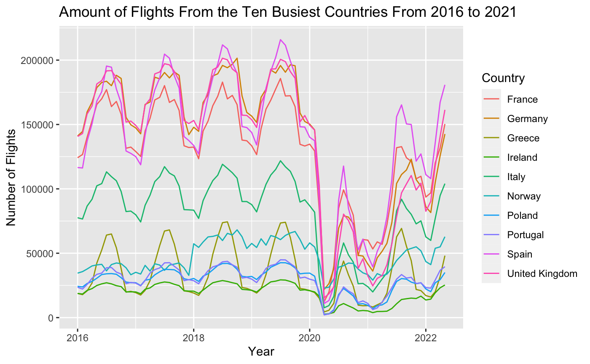

European Flights
This dataset contains information about flights within Europe in order to better understand the impact that the Covid-19 pandemic had on the airline industry and the current state of recovery. My data analysis started by trying to determine the ten busiest countries in Europe. When considered which countries were the busiest I looked at the entirety of the dataset, so the flight information ranges from 2016 to 2021. To do this I wrote the following R code
flights <- readr::read_csv('https://raw.githubusercontent.com/rfordatascience/tidytuesday/master/data/2022/2022-07-12/flights.csv')
top_10 <- flights %>%
group_by(STATE_NAME) %>%
count() %>%
ungroup() %>%
arrange(desc(n)) %>%
mutate(`rank` = row_number()) %>%
top_n(-10) %>%
select(`country` = STATE_NAME, `number of flights` = n)
top_10 %>%
ggplot(aes(x = reorder(country, -`number of flights`), y = `number of flights`)) +
geom_col() +
theme(axis.text.x = element_text(angle = 45, hjust = 1)) +
xlab("Country") +
ylim(0, 150000) +
ggtitle("Top European Countries With the Most Flights Since 2016") +
ylab("Number of Flights")
In a second visualization I cleaned up the dataset by creating a Date column by combining the YEAR and MONTH_NUM columns. When combining these columns I used the lubridate function make_date. In the second visualization I grouped the data by the country of origin, and instead of just counting the total number of flights, I tracked the number of flights by year in order to see the progression through time.
top_10_v2 %>% ggplot(aes(x = Date, y = Total, group = STATE_NAME, color = STATE_NAME)) + geom_line() + xlab("Year") + ylab("Number of Flights") + ggtitle("Amount of Flights From the Ten Busiest Countries From 2016 to 2021") + scale_color_discrete(name = "Country")